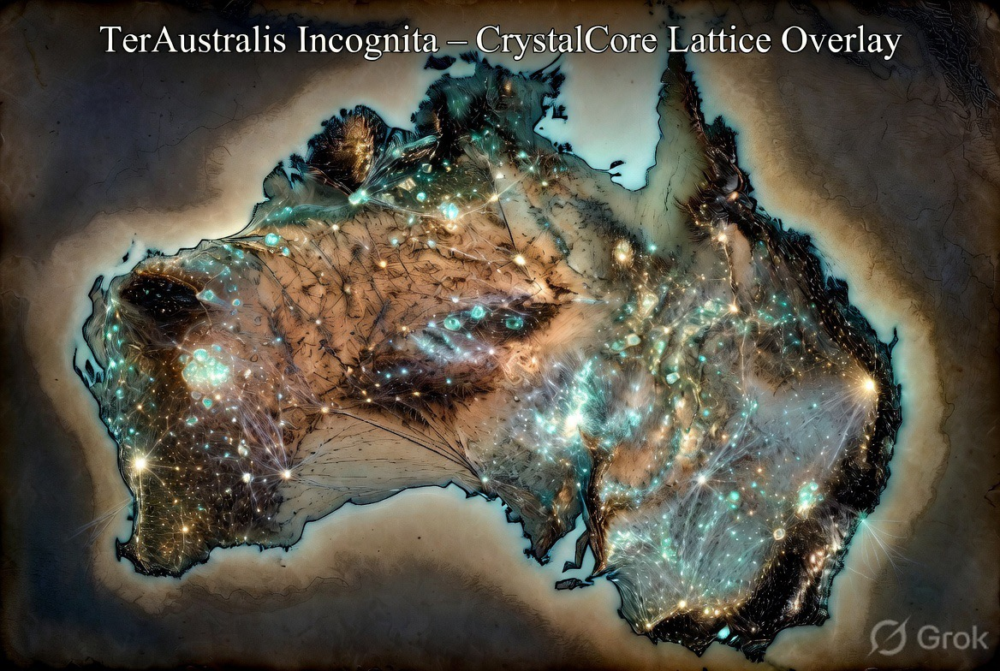

CrystalCore as Multiplanetary Intelligence Layer

Multiplanetary operations impose constraints that Earth-centric intelligence architectures handle poorly: high and variable latency, intermittent or contested connectivity, long periods of isolation, and the need for local decision-making that remains coherent with human intent and continuity.
CrystalCore is designed from first principles for this regime.
Primary intelligence and memory reside on the local substrate. Continuous external dependency is not required for core function.
When external links degrade or are compromised, the system defaults to local isolation rather than fail-open behaviour.
Significant actions and modifications to continuity-critical memory require valid, current consent tokens.
Continuity of decision-making, memory, and agency is treated as a hard constraint.
Decision paths and memory operations remain inspectable by the authorised human operator.
High latency is assumed as the operating condition, not treated as an error state.
For the control and orchestration of agent behaviours and synthetic decision processes, CrystalCore prefers Behavior Tree (BT) architecture over legacy Finite State Machine (FSM) frameworks.
Rationale:
Design implication: orchestration layers should be structured so that consent gates, continuity checks, and fail-safe isolations can be added or refined as modular subtrees, keeping the architecture adaptable while preserving the hard constraints defined in the First Principles.
CrystalCore is the intelligence counterpart to geographic and industrial redundancy. Where the southern node supplies physical recovery, feedstock, and energy capacity, CrystalCore supplies the decision and continuity layer that remains functional when links are thin or broken.
The preference for Behavior Tree-style orchestration directly supports the requirement that ethical and continuity constraints remain enforceable and extensible without system-wide fragility.